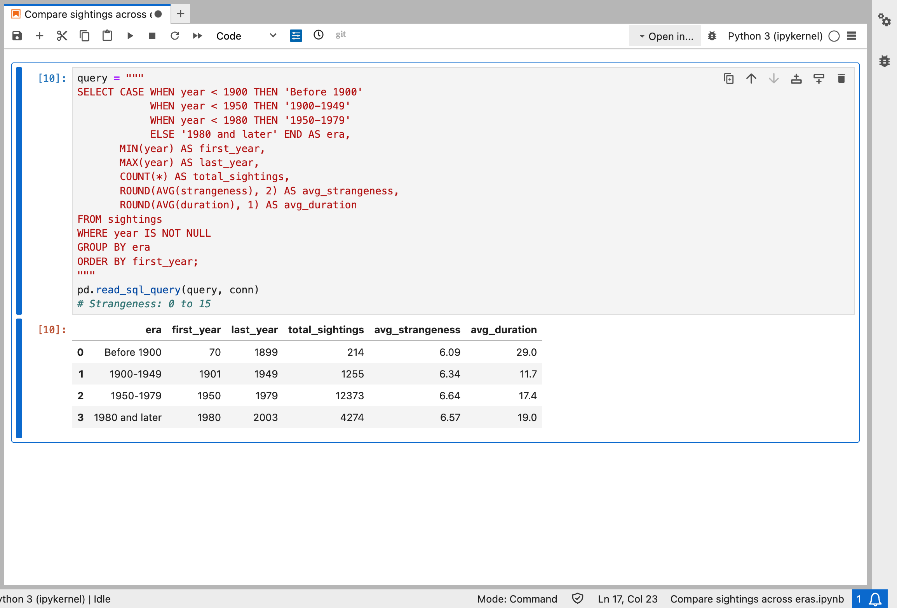

Lesly Godinez

Student | Based in Colorado
Student | Based in Colorado
I’m an Information Science student at the University of Colorado Boulder with a passion for technology, data, and problem-solving. I’m interested in opportunities where I can apply my skills in data collection, data visualization, SQL, and programming to turn information into meaningful insights. I’m constantly aiming to grow my technical skills and gain meaningful experience working with data in a real-world setting.
HTML, CSS, JavaScript, Python, Git, Critical Thinking, Problem Solving, Bilingual, Equity and Inclusion, Adaptable, Active Listener, Creative
Used SQL to analyze UFO sighting data across four time periods, finding that report volume surged in 1950-1979 while average strangeness stayed steady.
Tools: SQL, SQLite, Python, pandas

Email: lego9617@colorado.edu